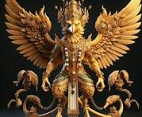

The Legend Garuna
This story is written by Allen Oberoii. i'm writing this code on Github. If you want to know more about
ancent garuna than you can click on read more..
garuna is a legend warrior with a sword and a shield. He is the most powerfull warrior in the world.

In the heart of the ancient Vedic kingdom of Suryan, where the golden sands met lush, emerald forests, there existed a legend of a powerful being known as Garuna. With the body of a human and the head of a majestic bird, Garuna was said to possess the strength of the earth and the grace of the skies. His wings could stir storms, and his gaze could pierce through the very fabric of time.
The kingdom of Suryan was ruled by the wise King Ranjit, a just leader beloved by his people. His reign was marked by peace and prosperity, but a shadow loomed over the land.
The Dark Sorcerer Keshar, exiled years ago for practicing forbidden magic, had returned with a vengeance. He sought to plunge the kingdom into chaos and reclaim the throne that had once been his by dark sorcery.
Keshar’s plan was to summon the Cursed Vortex, a tempest that would unravel the fabric of reality itself. The sorcerer gathered his dark forces in a hidden lair, preparing for the final ritual to unleash the vortex. Meanwhile, King Ranjit knew that only a force of divine power could stand against such evil.